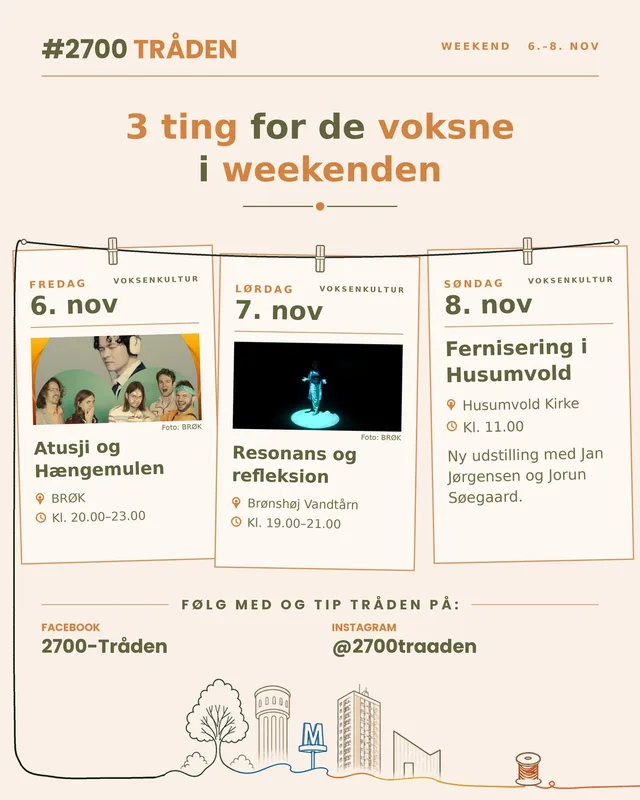

Hvad sker der i 2700 i denne weekend?
Fredag 6. november
Barselscafé: Parforholdet efter baby
Rytterskolen · Kl. 10.00–12.00 · 60 kr.
Familieterapeut Thit Houman fortæller om, hvad der sker med parforholdet, når man bliver forældre, og giver konkrete redskaber med hjem. Tag babyen med.
Læs mere
Atusji og Hængemulen + Av Godaw
BRØK · Kl. 20.00–23.00 · 150 kr., under 25 år 100 kr.
Dobbeltkoncert med poetisk indiepop og legesyg lyrik, når En Sommerdag på Bellahøj og BRØK inviterer. Atusjis album Indie fik fem stjerner i GAFFA.
Læs mere
Lørdag 7. november
Hoppeloppen – selvbetjent legestue (1–5 år)
BRØK (Bevægelsen) · Kl. 09.00–17.00 lørdag og søndag · Gratis
En lille indendørs legestue, hvor børnene bygger deres egen balancebane. Kun for 1–5-årige. Ingen tilmelding.
Læs mere
Børnenes loppemarked i BRØK
BRØK · Kl. 10.00–14.00 · Gratis entré
Cirka 30 stande, hvor børn sælger legetøj, tøj og småting fra deres egne værelser til andre børn. Kig forbi og gør et godt loppefund.
Læs mere
Astrid Lindgren-dag (3–8 år)
Brønshøj Bibliotek · Kl. 10.00–12.00 · Gratis, tilmelding
Se en kort film om Astrid Lindgren, og farvelæg Pippi, Emil og de andre ved det store kreabord. Filmen kører i loop, så I kan komme og gå.
Læs mere
Resonans og refleksion – lyd og lys i vandtårnet
Brønshøj Vandtårn · Kl. 19.00–21.00 · Gratis
Ingrid Søgaard og Johanna Sandels laver en performance med lyd og lys, der spiller sammen med vandtårnets rum og akustik. Den varer 30–45 minutter.
Læs mere
Søndag 8. november
Fernisering: Jan Jørgensen og Jorun Søegaard
Husumvold Kirke · Kl. 11.00
Fernisering på en ny udstilling med de to kunstnere, lige efter højmessen.
Læs mere
Freja HK damer – KSG
Bellahøj Hallen · Kl. 12.50
Håndbold i Bellahøj: Freja HK damer tager imod KSG i Danmarksserien.
Læs mere
Søndagsmatiné med Jazz Dippers
BRØK · Kl. 14.00–16.30 · 140 kr., medlemmer 100 kr.
Brønshøj Copenhagen Jazz Club byder på traditionel jazz, swing og boogie – fra Louis Armstrong til Bjarne Liller. Billetter købes i døren.
Læs mere
Gladsaxe Symfoniorkester – efterårskoncert
Bellahøj Kirke · Kl. 15.00 · Fri entré
Haydns Militærsymfoni, Beethovens Coriolan-ouverture og Gordon Jacobs Old Wine in New Bottles. Dirigent er Anne Lind.
Læs mere
Mozarts Requiem
Husumvold Kirke · Kl. 16.00 · Fri entré
Koret Euphonia, fem musikere og fire solister under Andreas Werenfeldt synger Mozarts sidste, ufærdige værk.
Læs mere
Har vi overset noget, der sker i 2700? Smid det i kommentarerne — så hjælper I med at gøre Fælleskalenderen bedre.